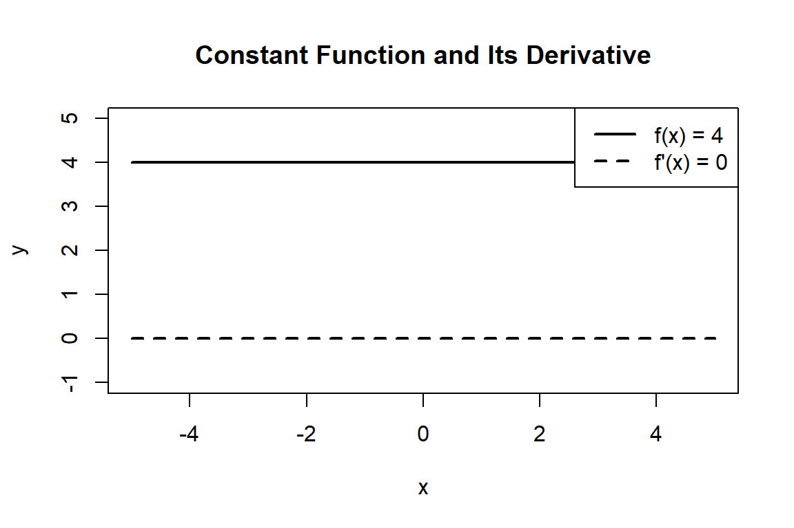

Chapter 4 Derivative Rules
Calculus is a powerful tool for analyzing change—but calculating derivatives from first principles using the limit definition can be time-consuming. Thankfully, mathematicians have developed rules that make the process faster, more intuitive, and easier to apply to real-world problems.
In this chapter, you’ll learn how to use these rules to quickly find derivatives of functions you’re likely to encounter in environmental science—whether you’re modeling the growth of a forest, the spread of an invasive species, or the rate at which pollutants enter a river.
We’ll focus on developing your comfort with:
- Recognizing patterns in how functions are built
- Reading mathematical expressions like a set of instructions
- Applying derivative rules like shortcuts to understand change more efficiently
By the end of this chapter, you’ll be able to:
- Use basic derivative rules to handle powers, constants, sums, and exponential functions
- Apply the product, quotient, and chain rule to more complex functions
- Interpret what each rule tells you about how and why a system is changing
Remember: Derivatives aren’t just algebra tricks—they’re windows into the behavior of systems over time.
4.1 Reading Mathematical Expressions Like a Set of Instructions
Many students struggle with math not because they don’t understand the underlying concepts, but because they see mathematical expressions as mysterious symbols on a page rather than what they truly are: a sequence of instructions. Each symbol and operator is like a verb telling you what to do next. For example, the “+” sign isn’t just a mark—it literally means “add these numbers together.” A derivative symbol, rather than being abstract, is simply an instruction to “find how fast this quantity is changing.”
When you begin to think of math as a set of steps or commands, it becomes less about memorization and more about following a recipe or a set of directions. This shift in perspective can transform math from something intimidating into something procedural and logical, where each step flows naturally from the last. Just as reading a musical score tells a musician which notes to play and when, reading a mathematical expression tells us which operations to perform and in what order.
4.1.1 Think of Math as a Recipe
Just like a recipe tells you what to do and in what order, a mathematical expression tells you how to process the input (usually a variable like \(x\)) to get an output.
Let’s take a simple example:
\[ f(x) = 3x^2 - 5x + 2 \]
This is not just a formula—it’s a set of steps:
- Take the input \(x\)
- Square it: \(x^2\)
- Multiply by 3: \(3x^2\)
- Multiply the original \(x\) by 5: \(5x\)
- Subtract: \(3x^2 - 5x\)
- Add 2
You don’t need to memorize the formula—you just need to follow the steps.
4.1.2 Operators Are Instructions
The symbols you see are operators:
They tell you what to do with each piece of the function.
| Symbol | Instruction |
|---|---|
| \(+\) | Add two quantities |
| \(-\) | Subtract one quantity from another |
| \(\times\) | Multiply |
| \(\div\) or fraction bar | Divide |
| \(^\) | Raise to a power |
| \(\sqrt{\cdot}\) | Take the square root |
Each operator builds on the last. When reading from left to right, use parentheses to help clarify what happens first.
4.1.3 Why This Matters for Derivatives
To take a derivative, you must examine how a function is constructed. That’s because:
- Each term contributes to the overall rate of change
- Derivative rules apply to specific structures (e.g. products, chains, powers)
The better you can “read” an expression, the easier it becomes to:
- Pick the right rule
- Avoid mistakes
- Explain what the math means in context
Activity: Reading the Math — What Is the Function Telling You?
In environmental science, mathematical models describe how systems change over time. To understand those models, we need to learn how to read equations like a story.
Let’s consider a function that models fish population \(P(t)\) (in thousands) over time \(t\) (in years):
\[ P(t) = 100e^{0.05t} - 20t \]
This expression might describe fish population growth that is limited by fishing, pollution, or resource depletion.
Questions to Guide Your Thinking
Try to interpret each part of this function like a set of instructions. Answer the questions below to help unpack the meaning of the expression.
- Overall Structure
- How many terms are in this function?
- What is being added or subtracted?
- First Term: \(100e^{0.05t}\)
- What kind of growth does this term represent?
- What is the role of the 100?
- What does the exponent \(0.05t\) suggest about the growth rate?
- Second Term: \(-20t\)
- What kind of relationship is this?
- Why might the model include a linear decrease?
- What could be happening in the environment to cause a consistent population loss over time?
- Big Picture
- What do you think happens to the population as time goes on?
- Is there a time when the population might start declining instead of growing?
- What real-world processes could this equation be modeling?
Write Your Own Interpretation
In your own words, describe what each part of the function is doing. Try completing this sentence:
“The term \(100e^{0.05t}\) tells me that the population is…, while the term \(-20t\) tells me that…”
4.1.4 Why This Matters
Being able to read a function is just as important as being able to solve it. By understanding how the structure reflects environmental processes, you’ll be better prepared to:
- Apply the correct derivative rules
- Interpret changes in real systems
- Communicate what the math means to others
4.1.5 Environmental Example
Suppose the temperature of a lake over time is modeled by:
\[ T(t) = 18 + 2 \sin\left(\frac{\pi t}{12}\right) \] And we are also given the derivative function:
\[ T'(t) = \frac{\pi}{6} \cos\left(\frac{\pi t}{12}\right) \]
Then:
- \(T(t)\) tells the relationship between temperature an time
- \(T'(t)\) tells you the rate of change in temperature at any moment.
- \(\frac{dT}{dt}\) is the same thing, just written in a form that highlights that we’re differentiating temperature with respect to time.
![Two stacked graphs show lake temperature and its derivative over a 48-hour period. The top graph shows temperature as a smooth oscillating curve with repeating peaks and troughs, indicating a daily cycle. The bottom graph shows the rate of change of temperature, which also oscillates and crosses zero at the times when the temperature reaches its maximum and minimum values. Positive values indicate the temperature is increasing, and negative values indicate it is decreasing. The figure illustrates the relationship between a function and its derivative in a periodic system.](environmental-precalculus_files/figure-html/lake-temp-2panel-1.png)
Figure 4.1: Lake temperature and its rate of change over time.
Reading the math:
- Try to explain in words what T(t) looks like, break the equation up and tell the story of temperature of this lake.
- Now try and tell the story of the derivative function.
- When is the temperature the highest? What is the rate of change at this point? Does this make sense?
- When is the rate of temperature change the highest? What is the temperature at this point? Does this make sense?
4.1.6 Reflect and Connect
Graphical relationship between functions and their derivatives
Examine the plots below.
- Can you explain the relationship between the two lines?
- What do they tell us about the function?
- Where is the derivative equal to zero? What feature do you see on the function at these points?
- The function changes concavity at some point, what do you see in the derivative at this point?
![Graph showing a function f(x) equals x cubed minus 5x and its derivative f prime of x equals 3x squared minus 5 on the same axes over the interval from negative 3 to 3. The function is shown as a black curve with turning points, while the derivative is shown as a red parabola. The derivative crosses zero at the x-values where the original function has local maximum and minimum points. Positive values of the derivative correspond to where the function is increasing, and negative values correspond to where it is decreasing.](environmental-precalculus_files/figure-html/function-derivative-overlay-1.png)
Figure 4.2: A function and its derivative plotted together.
Activity: Reading and Writing Derivatives
Understanding notation is like learning to read a map: it helps you navigate and communicate mathematical ideas clearly. With practice, it becomes second nature!
Understanding derivative notation helps you interpret, communicate, and solve real-world problems. In this activity, you’ll practice converting between different forms and interpreting real-world scenarios.
Step 1: Interpreting a Scenario
Scenario:
The population \(P\) of a coastal bird species is changing over time. A biologist says:
“The rate of change in population is proportional to the square of the time since a conservation effort began.”
Questions:
- Define the input and output variables in this problem.
- What does “rate of change in population” suggest mathematically?
- Write a formula that expresses this relationship using derivative notation.
Hint: If \(y\) was proportional to \(x\) it would mean the \(y = k.x\) where \(k\) is some constant \(k\).
Discussion Prompts
- Why might a conservationist want to know the rate at which a population is changing, not just its size?
By the end of this activity, you should feel more confident identifying, interpreting, and converting derivative notation—skills that will help throughout this chapter.
4.2 Introduction to Basic Derivative Rules
Now that you understand what a derivative is and how it connects to rates of change, we can start building your toolkit for taking derivatives quickly and confidently.
The following table summarizes the most commonly used basic derivative rules. These rules allow us to differentiate many types of functions without going back to the limit definition each time.
Keep this table handy—it’s your go-to reference for tackling many of the problems you’ll encounter in calculus and environmental modeling.
| Rule | Formula | Example |
|---|---|---|
| Constant Rule | \(\frac{d}{dx}(c) = 0\) | \(\frac{d}{dx}(7) = 0\) |
| Power Rule | \(\frac{d}{dx}(x^n) = n x^{n - 1}\) | \(\frac{d}{dx}(x^3) = 3x^2\) |
| Constant Multiple | \(\frac{d}{dx}[c \cdot f(x)] = c f'(x)\) | \(\frac{d}{dx}(5x^4) = 20x^3\) |
| Sum Rule | \(\frac{d}{dx}[f(x) + g(x)] = f'(x) + g'(x)\) | \(\frac{d}{dx}(x^2 + 3x) = 2x + 3\) |
| Difference Rule | \(\frac{d}{dx}[f(x) - g(x)] = f'(x) - g'(x)\) | \(\frac{d}{dx}(x^3 - 4x^2) = 3x^2 - 8x\) |
| Exponential Rule | \(\frac{d}{dx}(e^x) = e^x\) | \(\frac{d}{dx}(3e^x) = 3e^x\) |
| Logarithmic Rule | \(\frac{d}{dx}(\ln x) = \frac{1}{x}\) | \(\frac{d}{dx}(\ln(2x)) = \frac{1}{x}\) |
| Trig: Sine | \(\frac{d}{dx}(\sin x) = \cos x\) | — |
| Trig: Cosine | \(\frac{d}{dx}(\cos x) = -\sin x\) | — |
4.2.1 The Constant Rule
The Constant Rule tells us how to take the derivative of a constant. A constant doesn’t change, so its rate of change is zero. This makes sense because the derivative measures how quickly a function’s output changes as the input changes. If the function is always the same number, then no matter what value of \(x\) you plug in, the result doesn’t move—it’s perfectly flat.
Rule:
If
\[
f(x) = c
\]
where \(c\) is a constant (like 3, 5, or 100), then
\[
f'(x) = 0
\]
You can visualize this by graphing a constant function, such as \(f(x) = 4\). The graph is a horizontal line. Since the slope of a horizontal line is zero everywhere, the derivative is also zero everywhere.
4.2.2 Environmental Interpretation
This rule may seem simple, but it matters in real-world modeling. For example, suppose you measure the background level of a pollutant in a lake that remains steady over time (say, \(2\) parts per million). Because this concentration is constant, its rate of change with respect to time is zero. Similarly, a flat baseline temperature in a climate dataset or a fixed conservation quota can be represented as a constant function whose derivative is always zero.
The Constant Rule reminds us that when nothing changes, the mathematics reflects that stillness directly: no change means no slope, and thus a derivative of zero.Graphically, we can see this by the fact than a tangent line anywhere on the function would be ‘flat’ with a slope of zero.

Figure 4.3: Constant function and its derivative.
The Constant Rule tells us how to take the derivative of a constant. A constant doesn’t change, so its rate of change is zero.
Rule:
If
\[
f(x) = c
\]
where \(c\) is a constant (like 3, 5, or 100), then
\[
f'(x) = 0
\]
4.2.2.1 Environmental Example
Imagine you’re measuring the temperature in a perfectly climate-controlled greenhouse. If the temperature stays at 25°C all day, the rate of temperature change at any point is zero—it’s constant. So the derivative is:
\[ \frac{d}{dt}(25) = 0 \]
Concept Check: The Constant Rule
1. A lake’s baseline phosphorus concentration is 12 µg/L regardless of time. If we write this as \(P(t) = 12\), what is \(P'(t)\)?
Click to reveal answer
\(P'(t) = 0\)
A constant function has zero rate of change — the phosphorus level isn’t increasing or decreasing. The derivative of any constant is always zero.
2. True or false: If \(f'(x) = 0\) for all \(x\), then \(f(x)\) must equal zero.
Click to reveal answer
False. \(f'(x) = 0\) means the function is constant, but that constant could be any value — not necessarily zero. For example, \(f(x) = 42\) has \(f'(x) = 0\).
4.2.3 The Power Rule
The Power Rule is one of the most important and widely used rules in calculus. It tells us how to differentiate expressions involving powers of \(x\). Because so many functions in environmental science (and beyond) can be expressed as polynomials, this rule becomes one of the most frequently applied tools in your calculus toolkit.
Rule:
If
\[
f(x) = x^n
\]
where \(n\) is any real number, then
\[
f'(x) = n x^{n - 1}
\]
The idea is straightforward: bring the exponent down in front as a multiplier, and then reduce the exponent by one. This simple pattern makes it easy to quickly compute derivatives of terms like \(x^2\), \(x^3\), or even fractional and negative powers such as \(x^{1/2}\) or \(x^{-3}\).
Examples:
- \(\frac{d}{dx}(x^2) = 2x\)
- \(\frac{d}{dx}(x^5) = 5x^4\)
- \(\frac{d}{dx}(x^{-2}) = -2x^{-3}\)
- \(\frac{d}{dx}(\sqrt{x}) = \frac{1}{2}x^{-1/2}\)
Why it matters:
Most polynomials, which are just sums of power functions (like \(3x^4 - 2x^2 + 7\)), can be differentiated term by term using the Power Rule. This makes them some of the easiest functions to work with in calculus.
Environmental interpretation:
The Power Rule shows up when modeling physical quantities that scale with area or volume. For example:
- The cross-sectional area of a circular tree trunk is proportional to \(r^2\). If the radius of the trunk is changing over time, the rate of change of area can be found using the Power Rule.
- The volume of a sphere (like a balloon or water droplet) depends on \(r^3\). Differentiating with respect to time gives the rate at which volume changes as the radius grows or shrinks.
- In allometric scaling (relationships between body size and metabolism), power functions often describe how one ecological trait depends on another, and their rates of change can be quickly found using this rule.
By mastering the Power Rule, you gain a quick way to move from expressions of size or shape to expressions of change—a central theme in applying calculus to environmental science.
4.2.4 Polynomials and Their Derivatives
Here’s how different powers of \(x\) behave and how their derivatives affect the shape of their graphs:
| Power (n) | Function \(f(x) = x^n\) | Graph Type | Derivative \(f'(x)\) | Graph of Derivative |
|---|---|---|---|---|
| 0 | \(x^0 = 1\) | Constant | \(0\) | Flat line at 0 |
| 1 | \(x^1 = x\) | Linear (straight line) | \(1\) | Flat line at 1 |
| 2 | \(x^2\) | Quadratic (parabola) | \(2x\) | Linear |
| 3 | \(x^3\) | Cubic curve | \(3x^2\) | Parabola |
| 4 | \(x^4\) | Quartic (W-shape) | \(4x^3\) | Cubic curve |
Note: The derivative of a polynomial is always another polynomial of one degree lower.
4.2.5 Environmental Interpretation
Suppose you’re modeling tree growth height over time using a power function:
\[ H(t) = t^2 \]
The rate of growth at any time \(t\) is:
\[ H'(t) = 2t \]
This means the tree grows faster as time increases—something we often observe in early growth stages of many plants.
4.2.6 Example 1
Let
\[
f(x) = x^5
\]
It helps to identify the different parts of the function. So in this function \(n=5\). So we could now replace 5 into the power rule derivative expression
Then
\[
f'(x) = n x^{n - 1} \\
f'(x) = (5) x^{5-1} \\
f'(x) = 5x^4
\]
4.2.7 Example 2
Let
\[
V(t) = t^3
\]
Where V(t) represents the volume of glacial melt water over time. To find the rate of melt is we would use the power law with \(n=3\)
\[
V'(t) = nt^{n-1} \\
V'(t) = n(3)t^{3-1} \\
V'(t) = 3t^2
\]
4.2.8 Takeaway
Any time you see a variable raised to a power, apply the power rule:
- Multiply by the original exponent
- Subtract 1 from the exponent
This rule works for whole numbers, fractions, and even negative exponents!
Derivatives of fractional powers
Find the derivative of
\[ y = \sqrt {x} \] Hint: can you write \(\sqrt {x}\) as a power?
Concept Check: The Power Rule
1. Find the derivative of \(f(x) = x^5\).
Click to reveal answer
\[f'(x) = 5x^4\]
Using the power rule: bring the exponent down as a coefficient and reduce the exponent by one.
2. The volume of a spherical raindrop is \(V(r) = \frac{4}{3}\pi r^3\). Find \(\frac{dV}{dr}\). What does this derivative represent physically?
Click to reveal answer
\[\frac{dV}{dr} = 4\pi r^2\]
This is the rate at which volume changes with respect to radius. Notice it equals the surface area of the sphere — as the radius increases, the volume grows at a rate proportional to the surface area.
3. Rewrite \(\frac{1}{x^3}\) using a negative exponent and then differentiate.
Click to reveal answer
\[\frac{1}{x^3} = x^{-3}\]
\[\frac{d}{dx}\left(x^{-3}\right) = -3x^{-4} = -\frac{3}{x^4}\]
4.2.9 The Constant Multiple Rule
The Constant Multiple Rule tells us that when a function is multiplied by a constant, we can find the derivative by simply multiplying the derivative of the function by that constant.
This rule may feel obvious once you see it, but it’s surprisingly powerful. It tells us that constants don’t change the shape of the function’s derivative—they only scale it up or down. The slope patterns all stay the same, just stretched or compressed vertically.
4.2.9.1 Constant Multiple Rule (Function Notation)
If
\[
f(x) = c \cdot g(x)
\]
where \(c\) is a constant, then
\[
f'(x) = c \cdot g'(x)
\]
4.2.9.2 Constant Multiple Rule (Leibniz / Operator Notation)
We can also write this using the derivative operator \(\frac{d}{dx}\):
\[ \frac{d}{dx} \left[ c \cdot g(x) \right] = c \cdot \frac{d}{dx} \left[ g(x) \right] \]
This shows that the operator \(\frac{d}{dx}\) “passes through” the constant—it only acts on the function part \(g(x)\), not on the constant.
This works because constants don’t change as \(x\) changes, so they don’t contribute to the rate of change. Instead, they simply scale the rate of change of the underlying function.
4.2.10 Environmental Interpretation
The Constant Multiple Rule is especially important in environmental modeling, where constants often represent scaling factors such as efficiency, conversion rates, or unit adjustments. These constants don’t alter how a system changes, only the magnitude of that change.
Suppose the CO₂ uptake by a certain plant species is modeled by:
\[ U(t) = 0.3t^2 \]
Here we can map the function to the rule:
- \(c = 0.3\) (a constant that might represent efficiency or an uptake rate coefficient)
- \(g(t) = t^2\) (the underlying growth process in time)
Applying the Constant Multiple Rule:
\[ U'(t) = c \cdot g'(t) = (0.3)(2t) = 0.6t \]
This result tells us that the CO₂ uptake rate increases linearly with time. The coefficient \(0.6\) is simply the constant scaling the underlying process.
4.2.11 Example 1
Let
\[
f(x) = 7x^3
\]
Here, \(c = 7\) and \(g(x) = x^3\).
Differentiate \(g(x)\) using the Power Rule:
\[ g'(x) = 3x^2 \]
Now apply the Constant Multiple Rule:
\[ f'(x) = c \cdot g'(x) = 7 \cdot (3x^2) = 21x^2 \]
![Graph showing the function f(x) equals 7x cubed and its derivative f prime of x equals 21x squared over the interval from negative 3 to 3. The function is shown as a blue curve passing through the origin with increasing steepness. The derivative is shown as a red upward-opening parabola that is always nonnegative and equals zero at x equals 0. The figure illustrates that multiplying a function by a constant scales its derivative by the same constant, as seen in the relationship between 7x cubed and 21x squared.](environmental-precalculus_files/figure-html/constant-multiple-rule-plot-2-1.png)
Figure 4.4: Constant multiple rule illustrated with a cubic function.
4.2.12 Key Idea
The constant just comes along for the ride. Differentiate the function as usual, then multiply the result by the constant.
Tip: This rule is especially helpful when dealing with models where scaling factors are built into the equation.
Concept Check: The Constant Multiple Rule
1. A glacier retreats according to \(L(t) = 200 - 1.5t^2\) meters, where \(t\) is years. Find \(L'(t)\) and interpret it.
Click to reveal answer
\[L'(t) = -3t\]
The retreat rate is \(-3t\) meters per year. The negative sign tells us the glacier is shrinking, and the rate of shrinkage increases over time (it’s losing ice faster and faster).
2. If \(f(x) = 7x^4\), what is \(f'(x)\)?
Click to reveal answer
\[f'(x) = 7 \cdot 4x^3 = 28x^3\]
The constant 7 stays as a multiplier, and we apply the power rule to \(x^4\).
4.2.13 The Sum and Difference Rules
The Sum and Difference Rules tell us that the derivative of a sum or difference is simply the sum or difference of the derivatives. In other words, differentiation distributes over addition and subtraction. This is powerful because it means we can take a complicated expression, break it into smaller, more manageable parts, and then handle each piece on its own before recombining the results.
For example, suppose we want to differentiate
\[
f(x) = 3x^2 + \sin(x) - e^x.
\]
Instead of treating the entire function as a single, tangled object, we can separate it into three parts: \(3x^2\), \(\sin(x)\), and \(-e^x\). We find the derivative of each term individually (\(6x\), \(\cos(x)\), and \(-e^x\), respectively) and then add them back together. The process mirrors how scientists often analyze complex environmental systems—by breaking them into components that are easier to study before piecing them back together into a whole.
In environmental contexts, this rule shows up naturally. Imagine a model of a river’s flow rate that combines multiple factors: snowmelt, rainfall, and groundwater inputs. Each of these factors may follow its own mathematical relationship with time. By using the Sum Rule, we can calculate the overall rate of change in river flow by adding the individual rates of change of snowmelt, rainfall, and groundwater. This makes the mathematics not only simpler but also more meaningful, because it aligns with how we understand real-world systems as combinations of interacting parts.
4.2.13.2 Rule (Leibniz / Operator Notation)
Using operator notation:
\[ \frac{d}{dx} \left[ g(x) \pm h(x) \right] = \frac{d}{dx} \left[ g(x) \right] \pm \frac{d}{dx} \left[ h(x) \right] \]
The derivative distributes over addition and subtraction. This works because differentiation is a linear operation.
4.2.14 Environmental Interpretation
Suppose a wetland ecosystem has total carbon uptake modeled as the sum of uptake from two plant species:
\[ U_1(t) = (0.2t^2 + 0.5t) \\ U_2(t) = (t^3) \\ U_T= U_1(t)+U_2(t)=0.2t^2 + 0.5t +t^3 \] It makes sense then that the total uptake, \(U_T\), would be the uptake from both the species added together.
The rate of total uptake is:
\[ U_T'(t) = \frac{d}{dt}(0.2t^2 + 0.5t +t^3) \]
Using the sum derivative rule we could re-write the about expression as the sum of three derivatives:
\[ U_T'(t) = \frac{d}{dt}(0.2t^2) + \frac{d}{dt}(0.5t) + \frac{d}{dt}(t^3) \]
One it is in this form we apply the rules we let he math tell us what to do. The above expression is saying “the rate of uptake is the sum of three derivatives”. Remember \(\frac{d}{dt}\) is an operator telling us to ‘take the derivative of’ what ever comes next.
\[\begin{aligned} \text{1st Term:} \quad & \frac{d}{dt}(0.2t^2) = 0.2 \cdot \frac{d}{dt}(t^2) = 0.2 \cdot (2t) = 0.4t \\[6pt] \text{2nd Term:} \quad & \frac{d}{dt}(0.5t) = 0.5 \cdot \frac{d}{dt}(t) = 0.5 \cdot (1) = 0.5 \\[6pt] \text{3rd Term:} \quad & \frac{d}{dt}(t^3) = 3t^2 \\[10pt] \end{aligned}\]So the derivative is: \[ U'_T(t) = 0.4t + 0.5 + 3t^2. \]
We applied the derivative to each term, then combined the results. For the first and second term we used the constant multiplier rule and power rules. For the third term all we needed was the power rule.
4.2.15 Example 1
Let
\[
f(x) = x^3 + 5x - 4
\]
Then
\[
f'(x) = 3x^2 + 5
\]
(The derivative of a constant like \(-4\) is 0.)
4.2.17 Key Idea
Break the function into pieces using + and – signs.
Apply known derivative rules to each term, then combine them.
Tip: Combine the Constant Multiple Rule with the Sum and Difference Rules to quickly differentiate polynomials and real-world models.
Concept Check: Sum and Difference Rules
1. Temperature decreases with elevation according to \(T(h) = 25 - 0.0065h\), where \(h\) is meters above sea level. Find \(T'(h)\) and state its units.
Click to reveal answer
\[T'(h) = -0.0065\]
The units are °C per meter. This is the atmospheric lapse rate — temperature drops by 0.0065°C for every meter of elevation gained. Because \(T(h)\) is linear, the derivative is constant.
2. Find the derivative of \(g(x) = 3x^4 - 2x^2 + 5x - 9\).
Click to reveal answer
\[g'(x) = 12x^3 - 4x + 5\]
Apply the power rule to each term separately, and remember: the derivative of a constant (\(-9\)) is zero.
3. A simplified cost model for reforestation is \(C(n) = 50n + 0.02n^2\), where \(n\) is the number of seedlings. Find \(C'(n)\) and explain what it represents.
Click to reveal answer
\[C'(n) = 50 + 0.04n\]
This is the marginal cost — the cost of planting one additional seedling. Notice it increases with \(n\): the more seedlings you plant, the more expensive each additional one becomes (perhaps due to labor, logistics, or site preparation).
4.2.18 The Exponential Rule
One of the most remarkable functions in all of calculus is the natural exponential function (e):
\[ f(x) = e^x \]
This function is unique because its rate of change is equal to its value at every point:
\[ \frac{d}{dx} (e^x) = e^x \]
This means that the tangent line at any point on the graph has a slope equal to the height of the curve at that point. No other elementary function has this “self-replicating” property.
- If the function’s value is small, its slope is small.
- If the function’s value is large, its slope is large.
- Growth and steepness always keep pace with each other.
This is why \(e^x\) is so central in calculus: it perfectly embodies the idea of proportional change.
![Graph of the exponential function y equals e to the x over the interval from negative 2 to 2. Two tangent line segments are drawn, one at x equals 0 and one at x equals 1. At each point, the tangent line touches the curve and has the same slope as the function. The labels show that the value of the function equals the value of its derivative at each point, illustrating that the derivative of e to the x is itself. The tangent lines closely match the curve near their points of contact but diverge as x moves away.](environmental-precalculus_files/figure-html/exp-clean-2point2s-1.png)
Figure 4.5: Exponential function with tangent lines at two points.
4.2.19 Environmental Interpretation
Exponential functions appear frequently in environmental science because many natural processes change at a rate proportional to their current size or amount. This “proportional change” is what gives rise to exponential growth or decay.
Some common examples include:
Population growth in ideal conditions
When resources are abundant and limiting factors are minimal, populations can grow exponentially. For example, bacteria in a nutrient-rich environment may double at a fixed time interval. While no population can grow exponentially forever, this model is useful for understanding the early phases of population expansion or for comparing how fast different species can reproduce.Radioactive decay
Radioactive isotopes, such as carbon-14, decay at a rate proportional to the remaining quantity. This predictable exponential decay makes them powerful tools for dating environmental samples, such as using radiocarbon dating to estimate the age of fossils, soils, or archaeological artifacts.Spread of invasive species or diseases
Invasive plants or pathogens can initially spread exponentially when introduced into a new habitat, before natural controls (predators, competition, or resource limits) slow their growth.Atmospheric processes
Exponential decay is also used to model how pollutants or greenhouse gases diminish in the atmosphere over time through processes like chemical breakdown or absorption.
These examples highlight why exponential functions are so central to environmental science: they provide a first-order approximation of how systems evolve when the rate of change depends directly on the current state. Later, more complex models (e.g., logistic growth or coupled differential equations) can capture limits and interactions, but exponential functions form the foundation.
4.2.20 Key Insight
The exponential function grows faster and faster, but always in proportion to how large it already is. This self-replicating property makes it powerful—and dangerous—in real-world systems.
Discussion Prompt
Can you think of natural exponential processes that are of concern>
4.2.21 Examples
\(\frac{d}{dx} e^x = e^x\)
\(\frac{d}{dx} 5e^x = 5e^x\) ⟶ constant multiple rule still applies
\(\frac{d}{dx} e^{2x} = 2e^{2x}\) ⟶ chain rule! (covered next)
4.2.22 Summary
- The derivative of \(e^x\) is itself.
- Exponential models describe growth at a rate proportional to value.
- This rule forms the backbone of many environmental models involving runaway feedback, like CO₂ buildup or species invasion.
Concept Check: The Exponential Rule
1. A bacteria population grows as \(N(t) = 500e^{0.1t}\). Find \(N'(t)\) and calculate the growth rate at \(t = 10\) hours.
Click to reveal answer
\[N'(t) = 500 \cdot 0.1 \cdot e^{0.1t} = 50e^{0.1t}\]
At \(t = 10\): \[N'(10) = 50e^{1} \approx 50(2.718) \approx 136 \text{ bacteria per hour}\]
Notice that the growth rate itself is growing — this is the hallmark of exponential growth.
2. True or false: The derivative of \(e^x\) is \(xe^{x-1}\).
Click to reveal answer
False. That would be applying the power rule, which is for \(x^n\), not \(e^x\). The derivative of \(e^x\) is \(e^x\) — the exponential function is its own derivative. This is one of the most remarkable facts in calculus.
3. Radioactive decay is modeled by \(A(t) = A_0 e^{-0.03t}\). Without computing, will \(A'(t)\) be positive or negative? What does that mean?
Click to reveal answer
\(A'(t)\) will be negative because the exponent \(-0.03t\) makes the function decrease over time. The derivative tells us the substance is decaying — losing mass over time.
Specifically: \(A'(t) = -0.03 A_0 e^{-0.03t}\). The negative coefficient confirms the decreasing trend.
4.2.23 The Natural Logarithm Rule
The natural logarithm function \(\ln(x)\) is the inverse of the exponential function \(e^x\). While the exponential function grows at a rate proportional to its current size, the logarithm grows more and more slowly as \(x\) increases.
This slowing growth makes the logarithm especially useful in environmental models where diminishing returns or slowing growth are observed—for example, nutrient absorption in plants, the effect of adding fertilizer to soil, or population responses as they approach a carrying capacity.
4.2.23.1 Inverse Functions
An inverse function basically undoes what the original function does.
If a function takes you from input → output, the inverse takes you from that output → back to the input.
Think of it like this:
- Multiplying by 2 and then dividing by 2 get you back where you started.
- Exponentials and logarithms work the same way—\(e^x\) and \(\ln(x)\) undo each other.
So, an inverse function is just a mathematical “reverse button.”
4.2.24 Key Insight
- The logarithm is only defined for positive values of \(x\).
- Its rate of change is steep when \(x\) is close to zero, but gradually flattens out as \(x\) gets larger.
- The derivative captures this behavior:
\[ \frac{d}{dx} \ln(x) = \frac{1}{x} \]
This formula tells us that as \(x\) grows, the slope decreases. For very large \(x\), the slope approaches zero—indicating almost no change.
4.2.25 Examples
Basic Rule
\[ \frac{d}{dx} \ln(x) = \frac{1}{x} \]
At \(x=1\), the slope is \(1\). At \(x=10\), the slope is only \(0.1\).Log of a scaled input
\[ \frac{d}{dx} \ln(3x) = \frac{1}{3x} \cdot 3 = \frac{1}{x} \]
Notice that the factor of 3 cancels out in this case, showing that \(\ln(3x)\) grows at the same rate as \(\ln(x)\).Log of a power
\[ \frac{d}{dx} \ln(x^2) = \frac{1}{x^2} \cdot 2x = \frac{2}{x} \]
This highlights how the chain rule applies inside logarithms: the derivative of the “inside” function modifies the result.
4.2.26 Environmental Interpretation
The logarithmic rule is useful for modeling processes where growth slows over time or with increasing input:
- Resource depletion: As resources (like groundwater or fisheries) are consumed, the additional gain from each new unit of effort declines.
- Nutrient absorption: Plants absorb nutrients quickly when soil is depleted, but the uptake rate slows as the soil becomes saturated.
- Population growth toward carrying capacity: While early growth may look exponential, the long-term response often involves slowing growth that logarithms help describe.
In each case, the logarithm captures the idea that the “marginal returns” diminish as the system grows larger.
4.2.27 Summary
- The derivative of \(\ln(x)\) is \(\tfrac{1}{x}\).
- The slope decreases as \(x\) increases, showing diminishing change.
- This makes logarithmic models ideal for studying slowing growth, saturation effects, and resource limits in environmental systems.
Concept Check: The Natural Logarithm Rule
1. Find \(\frac{d}{dx}[\ln(x)]\). If \(x\) represents concentration in mg/L, what are the units of the derivative?
Click to reveal answer
\[\frac{d}{dx}[\ln(x)] = \frac{1}{x}\]
If \(x\) is in mg/L, then the derivative has units of \(\frac{1}{\text{mg/L}}\), or equivalently L/mg. This means the derivative tells us how sensitive the logarithmic response is per unit change in concentration.
2. The pH of a solution is defined as \(\text{pH} = -\log_{10}[H^+]\). If we write this using natural log, \(\text{pH} = -\frac{\ln[H^+]}{\ln 10}\), what is \(\frac{d(\text{pH})}{d[H^+]}\)?
Click to reveal answer
\[\frac{d(\text{pH})}{d[H^+]} = -\frac{1}{\ln(10)} \cdot \frac{1}{[H^+]}\]
The derivative is always negative, which makes sense: as hydrogen ion concentration increases, pH decreases (the solution becomes more acidic). The \(\frac{1}{[H^+]}\) factor means pH is more sensitive to changes at low concentrations.
4.3 Product, Quotient, and Chain Rule
So far, we’ve explored basic derivative rules for individual terms—constants, powers, exponentials, and logarithms. But what happens when functions are combined?
In real-world environmental systems, variables are rarely isolated. Instead, they interact:
- A pollution level might depend on population size × emission rate
- A species population might grow based on a changing habitat and food supply
- A rate of nutrient absorption might be modeled by a composite function like \(\ln(e^{kt})\)
In these situations, we need a new set of rules to differentiate combined functions:
- The Product Rule: for multiplying two functions
- The Quotient Rule: for dividing two functions
- The Chain Rule: for nested (composite) functions
These rules help us break down complex expressions into manageable parts, and they are essential for modeling dynamic, interconnected systems in environmental science.
4.3.1 Summary Table: Rules for Combined Functions
| Rule | Expression | Derivative |
|---|---|---|
| Product Rule | \(f(x) \cdot g(x)\) | \(f'(x) \cdot g(x) + f(x) \cdot g'(x)\) |
| Quotient Rule | \(\frac{f(x)}{g(x)}\) | \(\frac{f'(x) \cdot g(x) - f(x) \cdot g'(x)}{[g(x)]^2}\) |
| Chain Rule | \(f(g(x))\) | \(f'(g(x)) \cdot g'(x)\) |
We’ll walk through each of these rules with examples and visuals that connect directly to environmental applications.
4.3.2 Real-World Applications of Product, Quotient, and Chain Rules
4.3.2.1 Product Rule: Two Changing Quantities Multiplied
Scenario: Modeling carbon emissions from a city.
Let:
- \(P(t)\) = population size (increasing over time)
- \(E(t)\) = emissions per person
Then total emissions is:
\[ C(t) = P(t) \cdot E(t) \]
To find how fast emissions are growing, we use the product rule:
\[ C'(t) = P'(t) \cdot E(t) + P(t) \cdot E'(t) \]
This lets us understand whether total emissions are rising due to more people, more emissions per person, or both.
4.3.2.2 Quotient Rule: One Changing Quantity Divided by Another
Scenario: Modeling pollution concentration in a lake.
Let:
- \(A(t)\) = total pollutant amount (changing due to runoff or decay)
- \(V(t)\) = lake volume (changing due to rainfall or evaporation)
Pollution concentration is:
\[ C(t) = \frac{A(t)}{V(t)} \]
To find how the concentration is changing, we use the quotient rule:
\[ C'(t) = \frac{A'(t)V(t) - A(t)V'(t)}{[V(t)]^2} \]
This shows that increasing volume (dilution) can decrease concentration, even if pollutant levels stay the same.
4.3.2.3 Chain Rule: One Function Inside Another
Scenario: Modeling temperature-dependent species growth.
Let:
- \(T(t)\) = temperature over time (changes daily or seasonally)
- \(G(T)\) = growth rate as a function of temperature
Then species growth rate over time is:
\[ G(t) = G(T(t)) \]
To find the rate of change of growth over time:
\[ G'(t) = G'(T) \cdot T'(t) \]
This lets us account for how growth indirectly changes with time due to temperature variation.
4.4 The Product Rule
In calculus, the Product Rule is used to take the derivative of a product of two functions. If a quantity depends on two changing functions multiplied together, we can’t simply take the derivative of each part independently. We need a rule that accounts for how both parts change together.
The rule is written as: \[ \frac{d}{dx}\big[f(x)\,g(x)\big] \;=\; f(x)\,g'(x) \;+\; f'(x)\,g(x). \]
You may also see this written using \(u\) and \(v\) notation: \[ \frac{d}{dx}(uv) \;=\; u\,\frac{dv}{dx} \;+\; \frac{du}{dx}\,v \quad\text{or}\quad \frac{d}{dx}(uv) \;=\; u\,v' + u'\,v. \] Here, \(u\) and \(v\) are stand-ins for the two functions being multiplied. They’re just labels to organize your work.
4.4.1 Why Does the Rule Work? (Intuition)
Think of a rectangle whose sides change with \(x\): width \(= f(x)\), height \(= g(x)\).
The area is \(A(x) = f(x)\,g(x)\).
When \(x\) increases a tiny amount, both sides change a tiny bit. The area increases due to: 1) the width changing while the height is held (momentarily) fixed, plus 2) the height changing while the width is held (momentarily) fixed.
Those two contributions add up: \[ \Delta A \approx f(x)\,\Delta g \;+\; g(x)\,\Delta f \quad\Rightarrow\quad A'(x) = f(x)g'(x) + f'(x)g(x). \]
Mnemonic: “first × (derivative of second) + (derivative of first) × second.” Only one part gets differentiated in each term.
Quick Activity: Visualizing the Product Rule with Area
Imagine a square whose side length depends on \(x\). At some moment, its sides have length \(f(x)\) and \(g(x)\). The area is:
\[ A(x) = f(x) \cdot g(x) \]
Now suppose \(x\) increases by a tiny amount. Both sides of the square grow a little bit, which means new thin strips of area get added around the edges.
Instructions:
1. Draw a rectangle on your paper. Label the horizontal side \(f(x)\) and the vertical side \(g(x)\).
2. Increase both sides slightly: imagine the new side lengths are \(f(x) + \Delta f\) and \(g(x) + \Delta g\).
3. Shade in the new area that gets added:
- A horizontal strip of area: \(f(x)\cdot \Delta g\)
- A vertical strip of area: \(g(x)\cdot \Delta f\)
- (Ignore the tiny corner piece \(\Delta f \cdot \Delta g\)—it’s very small compared to the strips.)
- Identify each piece: which strip corresponds to \(f(x)\,g'(x)\), and which to \(f'(x)\,g(x)\)?
- Connect back: notice that the total new area is just the sum of those strips, which is exactly the Product Rule.
Discussion Prompt
Why do we get two separate terms instead of one? What would happen if we only counted one strip?
4.4.2 Step-by-Step Example (using \(u\) and \(v\) notation)
Differentiate \(f(x) = (2x^2)(\ln x)\).
- Label parts clearly
Let’s break the product into two pieces:- \(u = 2x^2\) (a polynomial)
- \(v = \ln x\) (a logarithm)
Tip: Identifying \(u\) and \(v\) first prevents mistakes later when plugging into the Product Rule. It’s like naming the players before describing the play.
- \(u = 2x^2\) (a polynomial)
- Differentiate each part
- \(u' = \frac{d}{dx}(2x^2) = 4x\)
- \(v' = \frac{d}{dx}(\ln x) = \tfrac{1}{x}\)
Notice how the rules we’ve already learned come together here: the Power Rule for \(2x^2\), and the Logarithm Rule for \(\ln x\).
- \(u' = \frac{d}{dx}(2x^2) = 4x\)
Apply the Product Rule
Recall: \((uv)' = u\,v' + u'\,v\).
Substitute in each part:\[ f'(x) = u\,v' + u'\,v = (2x^2)\left(\frac{1}{x}\right) + (4x)(\ln x). \]
The first term represents the change when \(\ln x\) changes while \(2x^2\) stays fixed.
The second term represents the change when \(2x^2\) changes while \(\ln x\) stays fixed.
Together, they capture the total change.
Simplify the expression
\[ f'(x) = 2x + 4x\ln x. \]Always check if terms can be simplified. Here, \(\tfrac{2x^2}{x} = 2x\).
A simpler final answer makes patterns easier to see and avoids unnecessary complexity.
What we learned here:
- The Product Rule ensures both changing parts of the product are accounted for.
- Each derivative rule (Power, Logarithm, Constant Multiple) can appear inside a Product Rule problem.
- Simplification at the end often reveals a cleaner structure—in this case, notice how both terms share a factor of \(x\):
\[ f'(x) = x(2 + 4\ln x). \]
Factoring can make the expression easier to interpret, especially if you’ll use it later in optimization or modeling.
4.4.3 Step-by-Step Example (using \(f\) and \(g\) notation)
Differentiate
\[
h(x) = (x^3)(e^x).
\]
- Identify each function
- Let \(f(x) = x^3\)
- Let \(g(x) = e^x\)
- Let \(f(x) = x^3\)
- Differentiate each part
- \(f'(x) = \frac{d}{dx}(x^3) = 3x^2\)
- \(g'(x) = \frac{d}{dx}(e^x) = e^x\)
Notice how we’re reusing familiar rules: the Power Rule and the Exponential Rule.
- \(f'(x) = \frac{d}{dx}(x^3) = 3x^2\)
Apply the Product Rule
Recall:
\[ (fg)' = f \cdot g' + f' \cdot g \]Substitute \(f(x), f'(x), g(x), g'(x)\):
\[ h'(x) = f(x)g'(x) + f'(x)g(x) \] \[ h'(x) = (x^3)(e^x) + (3x^2)(e^x). \]
Simplify the expression
Factor out the common term \(e^x\):
\[ h'(x) = e^x(x^3 + 3x^2). \]Factoring here makes the structure more visible: the exponential \(e^x\) “comes along for the ride,” while the polynomial part handles the changing powers of \(x\).
Takeaway:
When using \(f\) and \(g\) notation, the Product Rule formula is straightforward:
- Multiply the original \(f\) by the derivative of \(g\),
- Add the derivative of \(f\) times the original \(g\).
4.4.4 Environmental Example
Suppose total forest biomass \(B(t)\) is the product of:
- Tree density \(D(t) = 50e^{0.02t}\)
(number of trees per hectare, growing approximately exponentially),
- Average tree mass \(M(t) = 100 + 5\sin t\)
(average mass of an individual tree, fluctuating slightly with seasonal cycles).
Then the total biomass is: \[ B(t) = D(t)\,M(t). \]
4.4.4.1 Step-by-Step Differentiation
- Label each part clearly
- \(u = 50e^{0.02t}\) (density of trees, growing steadily)
- \(v = 100 + 5\sin t\) (mass per tree, oscillating over time)
Splitting the model into density and mass mirrors how ecologists break down population and individual traits.
- \(u = 50e^{0.02t}\) (density of trees, growing steadily)
- Differentiate each part
- \(u' = \frac{d}{dt}(50e^{0.02t}) = 50 \cdot 0.02e^{0.02t} = e^{0.02t}\)
(density is increasing at a constant 2% growth rate)
- \(v' = \frac{d}{dt}(100 + 5\sin t) = 5\cos t\)
(tree mass changes cyclically, speeding up when \(\cos t\) is large)
Notice how exponential growth (for density) and oscillatory change (for mass) combine in this model.
- \(u' = \frac{d}{dt}(50e^{0.02t}) = 50 \cdot 0.02e^{0.02t} = e^{0.02t}\)
Apply the Product Rule
\[ B'(t) = u\,v' + u'\,v \] Substituting:
\[ B'(t) = 50e^{0.02t}\cdot 5\cos t \;+\; e^{0.02t}(100 + 5\sin t). \]The first term represents biomass change driven by seasonal shifts in mass while density stays fixed.
The second term represents biomass change driven by density growth while tree mass stays fixed.
- Interpretation of the Result
First term: \(50e^{0.02t}\cdot 5\cos t\)
captures the effect of seasonal mass fluctuations across all trees. When \(\cos t > 0\), trees are gaining mass on average, boosting biomass. When \(\cos t < 0\), they are losing mass, reducing biomass.Second term: \(e^{0.02t}(100 + 5\sin t)\)
captures the effect of increasing density. Even if individual trees aren’t changing much, adding more trees steadily increases total biomass.
Together, these terms highlight how two biological processes interact: population expansion and seasonal changes in individual growth. The Product Rule ensures both are accounted for simultaneously.
Big Idea:
The Product Rule isn’t just an abstract formula—it matches how environmental systems behave. Complex outcomes often come from two simpler factors interacting, and calculus gives us a precise way to measure those interactions.
4.4.5 When to Use (and Not Use)
- Use Product Rule when the expression is a product of two changing functions (e.g., \(x^2 e^x\), \(\ln x \cdot \sin x\), \(D(t)M(t)\)).
- Don’t use Product Rule for a constant multiple: \(7x^3\) → use the Constant Multiple Rule.
- If you see a composition (e.g., \(e^{2x}\), \(\ln(x^2+1)\)), that’s the Chain Rule (sometimes combined with a Product Rule if there’s also a product).
4.4.6 Common Pitfalls & Quick Checks
- Wrong pattern: \((uv)' \neq u'v'\) — you must add the two terms \(u\,v' + u'\,v\).
- Units check: If \(u\) has units A and \(v\) has units B, then each term in \(u\,v' + u'\,v\) has units A·B per unit \(x.\) Mismatched units can reveal algebra slips.
- Symmetry check: Swapping \(u\) and \(v\) leaves \(u\,v' + u'\,v\) unchanged—good sanity check.
Quick Practice
- Differentiate \(f(x) = x^3\ln x\).
- Differentiate \(g(x) = (1+x^2)\,e^x\) and factor the result.
- Environmental: If river discharge \(Q(t) = A(t)\,v(t)\) with cross-sectional area \(A\) and velocity \(v\), write \(Q'(t)\) and explain each term in words.
4.4.7 Summary
The Product Rule handles derivatives of products:
\[ (fg)' = f\,g' + f'\,g. \] Intuition: change from the first factor plus change from the second factor.
Differentiate one factor at a time, then add.
Concept Check: The Product Rule
1. Which of these requires the product rule to differentiate? (Select all that apply)
- \(f(x) = 3x^2\)
- \(f(x) = x^2 \cdot e^x\)
- \(f(x) = (2x+1)(x^3 - 4)\)
- \(f(x) = 5 \ln(x)\)
Click to reveal answer
b) and c) require the product rule.
- is just a constant multiple of a power — use the constant multiple rule
- is a product of two different types of functions (\(x^2\) and \(e^x\))
- is a product of two polynomial expressions
- is just a constant multiple of \(\ln(x)\) — use the constant multiple rule
The key question: are there two separate functions being multiplied together, where both depend on \(x\)?
2. Biomass accumulation in a forest can be modeled as \(B(t) = t^2 \cdot e^{-0.1t}\) (growth times natural decay). Find \(B'(t)\) using the product rule.
Click to reveal answer
Let \(u = t^2\) and \(v = e^{-0.1t}\).
Then \(u' = 2t\) and \(v' = -0.1e^{-0.1t}\).
\[B'(t) = u'v + uv' = 2t \cdot e^{-0.1t} + t^2 \cdot (-0.1e^{-0.1t})\]
\[B'(t) = e^{-0.1t}(2t - 0.1t^2)\]
Setting this to zero: \(t(2 - 0.1t) = 0\), giving \(t = 0\) or \(t = 20\). So biomass peaks at \(t = 20\) years.
4.5 The Quotient Rule
In calculus, the Quotient Rule is used to take the derivative of a quotient of two functions. If a quantity depends on one function divided by another, we need a rule that tells us how to account for both the numerator and the denominator changing at the same time.
The rule is written as:
\[ \frac{d}{dx} \left[ \frac{f(x)}{g(x)} \right] = \frac{g(x) \cdot f'(x) - f(x) \cdot g'(x)}{[g(x)]^2} \]
You may also see this written using \(u\) and \(v\) notation:
\[ \frac{d}{dx} \left( \frac{u}{v} \right) = \frac{v \cdot u' - u \cdot v'}{v^2} \]
Here, \(u\) and \(v\) are dummy variables—stand-ins for the numerator and denominator functions. They’re useful for understanding the structure of the rule, but in real problems, you’ll work with named expressions like \(f(x)\), \(C(t)\), or \(B(t)\).
4.5.1 Why Does the Rule Work?
When dividing two functions, both the top and bottom are changing—and that affects the overall rate of change. The Quotient Rule carefully balances these changes:
- It starts with the derivative of the top times the bottom
- Then subtracts the top times the derivative of the bottom
- And finally divides everything by the square of the bottom function
4.5.2 Step-by-Step Process (Quotient Rule)
Differentiate: \[ f(x) = \frac{2x^2 + 3}{x + 1}. \]
- Label each part
- \(u = 2x^2 + 3\) (the numerator)
- \(v = x + 1\) (the denominator)
Just like in the Product Rule, we split the expression into two parts, but now we have a fraction. It helps to keep “top = \(u\)” and “bottom = \(v\)” in mind.
- \(u = 2x^2 + 3\) (the numerator)
- Differentiate each part
- \(u' = \frac{d}{dx}(2x^2 + 3) = 4x\)
- \(v' = \frac{d}{dx}(x+1) = 1\)
Nothing tricky here: numerator is a polynomial, denominator is linear.
- \(u' = \frac{d}{dx}(2x^2 + 3) = 4x\)
Apply the Quotient Rule
Recall the formula:
\[ \frac{d}{dx}\left(\frac{u}{v}\right) = \frac{v\cdot u' - u\cdot v'}{v^2}. \]Substituting our parts:
\[ f'(x) = \frac{(x+1)(4x) - (2x^2+3)(1)}{(x+1)^2}. \]Notice the subtraction in the numerator. This is what distinguishes the Quotient Rule from the Product Rule.
A useful mnemonic: “low d-high minus high d-low, over low-low.”
(low = denominator, high = numerator)
Simplify the expression
Expand and combine terms in the numerator:
\[ f'(x) = \frac{4x^2 + 4x - 2x^2 - 3}{(x+1)^2}. \]Combine like terms:
\[ f'(x) = \frac{2x^2 + 4x - 3}{(x+1)^2}. \]Simplifying makes the structure clearer and prepares the result for later use (like plugging into a model or checking limits).
4.5.3 Key Idea
The Quotient Rule accounts for the fact that both numerator and denominator are changing. The subtraction ensures we capture the effect of the denominator’s change correctly. Forgetting the subtraction is one of the most common student mistakes.
4.5.4 Example 2: Environmental Application
Suppose the nutrient concentration in a lake is modeled by a ratio:
- Total nutrient mass: \(N(t) = 100 + 20t\)
- Water volume: \(V(t) = 500 + 10\cos(t)\)
Then:
\[ C(t) = \frac{N(t)}{V(t)} = \frac{100 + 20t}{500 + 10\cos(t)} \]
Let’s find the rate of change \(C'(t)\), step by step.
4.5.4.1 Step-by-Step Process
Label each part:
- Let \(u = 100 + 20t\)
- Let \(v = 500 + 10\cos(t)\)
Differentiate each part:
- \(u' = 20\)
- \(v' = -10\sin(t)\)
Apply the quotient rule: \[ C'(t) = \frac{v \cdot u' - u \cdot v'}{v^2} \] \[ C'(t) = \frac{(500 + 10\cos(t))(20) - (100 + 20t)(-10\sin(t))}{(500 + 10\cos(t))^2} \]
Simplify the expression: \[ C'(t) = \frac{10000 + 200\cos(t) + 1000\sin(t) + 200t\sin(t)}{(500 + 10\cos(t))^2} \]
This expression tells you how quickly the concentration is changing over time—factoring in both the growing nutrient load and seasonal fluctuations in water volume.
4.5.5 Summary
The Quotient Rule helps you differentiate when one function is divided by another.
Remember: - Differentiate the top and bottom separately - Apply the rule: \(\frac{v \cdot u' - u \cdot v'}{v^2}\) - Keep track of signs—subtraction matters! - This rule tells you exactly what to do in a structured, step-by-step way.
4.6 The Chain Rule
In calculus, the Chain Rule is used when you’re taking the derivative of a composite function—that is, one function nested inside another. This happens all the time in environmental modeling, where one variable depends on another that itself is changing.
The Chain Rule is written as:
\[ \frac{d}{dx} \left[ f(g(x)) \right] = f'(g(x)) \cdot g'(x) \]
Or in \(u\)-notation:
\[ \frac{dy}{dx} = \frac{dy}{du} \cdot \frac{du}{dx} \]
Here, \(y = f(u)\) and \(u = g(x)\), so you’re taking the derivative of the outer function, evaluated at the inner function, and then multiplying by the derivative of the inner function.
4.6.1 Composite Functions (Plain English)
Before you apply the Chain Rule, it’s helpful to get a clear sense of what a composite function is in everyday terms.
- A composite function is when one function feeds into another.
- Think of it like a pipeline: the output of the first function becomes the input of the second.
Examples in words:
- “Take a number, square it, then take the sine.” That’s \(\sin(x^2)\).
- “Take a number, double it, then plug it into an exponential.” That’s \(e^{2x}\).
So instead of two functions side by side (product) or one divided by another (quotient), a composite is one function wrapped inside another.
Plain English rule: When you differentiate a composite, you have to respect the layers. Start with the outside layer, then peel back and multiply by the derivative of the inside layer. It’s like peeling an onion, one layer at a time.
4.6.2 Why Does the Rule Work?
Chain Rule Hike
Let’s explore the Chain Rule through a real-world analogy.
- Your trail distance itself depends on how much time you’ve been walking.
So the final question is: how fast is your distance from camp changing with time?
Step 2: Break down the layers
Let’s introduce some symbols:
- Let \(C\) = your distance from camp (in miles).
- Let \(s\) = your distance along the trail (in miles).
- Let \(t\) = time (in hours).
Try this: - What is C a function of? Write the expression - What is s a function of? Write the expression - Can you combine these two functions as a composite function?
Step 3: Think about the rates separately
Ask yourself two smaller questions:
- How does \(C\) change when \(s\) changes?
- How does \(s\) change when \(t\) changes?
Step 4: Combine the rates
Now connect them. To find how \(C\) changes with respect to \(t\):
\[ \frac{dC}{dt} = \frac{dC}{ds} \cdot \frac{ds}{dt}. \]
This is the Chain Rule in action: the overall rate is the product of the two linked rates.
Step 5: Reflect
- Why do we multiply instead of add?
- What would happen if the trail were straight versus winding?
- How does this analogy help you understand why the Chain Rule is needed when functions are “nested”?
The Chain Rule is just formalizing the idea of a “rate of a rate.” If you know how fast one thing changes with another, and how that second thing changes with time, you can multiply the two to find the total rate of change.
4.6.3 Step-by-Step Process (Chain Rule in Action)
Differentiate: \[ f(x) = \sqrt{3x^2 + 1}. \]
- Identify inner and outer functions
The function has a nesting:
- The inner function is what’s inside the square root:
\[ u = 3x^2 + 1. \]
- The outer function is the square root itself:
\[ f(u) = \sqrt{u} = u^{1/2}. \]
Tip: Always peel back the layers like an onion. First ask, “What’s wrapped around the \(x\)?” Here, the outer layer is the square root, wrapped around \(3x^2 + 1\).
- Differentiate each part
- Differentiate the outer function with respect to its input \(u\):
\[ f'(u) = \frac{d}{du}(u^{1/2}) = \tfrac{1}{2}u^{-1/2}. \]
This says: the slope of the square root gets smaller as \(u\) gets bigger.
- Differentiate the inner function with respect to \(x\):
\[ u' = \frac{d}{dx}(3x^2+1) = 6x. \]
The inner part is just a polynomial; its slope grows linearly with \(x\).
- Apply the Chain Rule The Chain Rule says: \[ \frac{df}{dx} = f'(u)\cdot u'. \]
Substitute our results: \[ f'(x) = \Big(\tfrac{1}{2}(3x^2+1)^{-1/2}\Big)\cdot (6x). \]
Interpretation: take the derivative of the square root as if it were just \(u\), then multiply by how fast the inside (\(3x^2+1\)) is changing.
- Simplify the expression
Multiply constants: \[ f'(x) = \frac{6x}{2}(3x^2+1)^{-1/2}. \]
Reduce the fraction: \[ f'(x) = 3x(3x^2+1)^{-1/2}. \]
Rewrite the negative exponent as a square root: \[ f'(x) = \frac{3x}{\sqrt{3x^2+1}}. \]
Takeaway:
The Chain Rule is about peeling off the outer layer, differentiating it, and then multiplying by how fast the inner layer changes. Without the inner derivative, the answer will always be incomplete.
4.6.4 Example 2: Environmental Application
Suppose the water temperature in a stream increases due to sunlight exposure over time, and the rate of fish metabolism \(M\) depends on that temperature:
- Temperature: \(T(t) = 10 + 5\sin(t)\)
(base temperature of 10°C plus daily/seasonal fluctuations of ±5°C modeled by a sine wave)
- Metabolism: \(M(T) = e^{0.2T}\)
(exponential relationship between metabolism and temperature, as often seen in biological processes)
So the composite function is: \[ M(t) = e^{0.2(10 + 5\sin(t))}. \]
We want to differentiate \(M(t)\) with respect to time \(t\) to see how quickly fish metabolism is changing over time.
4.6.4.1 Step-by-Step Process
- Label inner and outer functions
- Inner function:
\[ u = 10 + 5\sin(t) \]
This is the temperature as a function of time.
- Outer function:
\[ M(u) = e^{0.2u} \]
This is the metabolism as a function of temperature.
- Inner function:
Always start by peeling back the layers: first the sine-based temperature change (inner), then the exponential response (outer).
- Differentiate each part
- Outer derivative:
\[ \frac{dM}{du} = 0.2e^{0.2u} \]
- Outer derivative:
This says that metabolism increases at a rate proportional to its current level—classic exponential growth.
- Inner derivative:
\[ \frac{du}{dt} = 5\cos(t) \]
The rate of temperature change depends on the cosine curve: steepest at midpoints of the sine wave (sunrise/sunset) and flat at peaks/troughs (midday/night).
- Apply the Chain Rule
Combine the pieces:
\[ M'(t) = \frac{dM}{du} \cdot \frac{du}{dt} = 0.2e^{0.2(10 + 5\sin(t))} \cdot 5\cos(t). \]
This formula captures two processes at once: the exponential sensitivity of metabolism to temperature and the sinusoidal fluctuation of temperature with time.
- Simplify the expression
Multiply constants:
\[ M'(t) = e^{0.2(10 + 5\sin(t))} \cdot \cos(t).\\ M'(t) = e^{2 + \sin(t)} \cdot \cos(t).\\ \]
Notice how cleanly the constants combine—the factor of \(0.2\) and the \(5\) become a neat multiplier of \(1\).
The result shows metabolism change is driven by both the direction of temperature change (sign of \(\cos t\)) and the magnitude of metabolism (the exponential).
4.6.5 Interpretation
- When \(\cos(t) > 0\): temperature is rising, so metabolism is increasing.
- When \(\cos(t) < 0\): temperature is falling, so metabolism is decreasing.
- When \(\cos(t) = 0\): temperature is at its peak or trough, so metabolism is momentarily changing at rate zero (flat slope).
This matches ecological intuition: metabolism accelerates most when temperature is changing quickly, and stabilizes when temperature is near extremes.
Takeaway:
This example shows why the Chain Rule is essential in environmental modeling, variables rarely depend on time directly. Instead, they depend on other variables (like temperature), which themselves depend on time or other drivers. The Chain Rule is how we connect all the links in the chain.
4.6.6 Summary
The Chain Rule is used when one function is inside another—a composite function.
- Step 1: Identify the outer function and the inner function.
- Step 2: Differentiate each one.
- Step 3: Multiply them together: (outer derivative, evaluated at the inner) × (inner derivative).
In plain terms: differentiate layer by layer.
This happens constantly in real-world systems, where one variable depends on another that is also changing.
Concept Check: The Chain Rule
1. Identify the “outer” and “inner” functions in \(f(x) = e^{-0.03x^2}\).
Click to reveal answer
- Outer function: \(e^{(\cdot)}\) (the exponential)
- Inner function: \(-0.03x^2\) (what’s plugged into the exponential)
To differentiate: apply the derivative of the outer (\(e^{(\cdot)}\)) and multiply by the derivative of the inner (\(-0.06x\)):
\[f'(x) = e^{-0.03x^2} \cdot (-0.06x) = -0.06x \, e^{-0.03x^2}\]
2. Dissolved oxygen in a lake follows \(D(t) = \ln(t^2 + 1)\). Find \(D'(t)\).
Click to reveal answer
The outer function is \(\ln(\cdot)\) and the inner is \(t^2 + 1\).
\[D'(t) = \frac{1}{t^2 + 1} \cdot 2t = \frac{2t}{t^2 + 1}\]
At \(t = 0\), \(D'(0) = 0\) 014 the dissolved oxygen isn’t changing. For \(t > 0\), \(D'(t) > 0\) 014 DO is increasing, but at a decreasing rate.
3. True or false: \(\frac{d}{dx}[\ln(5x)] = \frac{1}{5x}\).
Click to reveal answer
False. By the chain rule: \[\frac{d}{dx}[\ln(5x)] = \frac{1}{5x} \cdot 5 = \frac{1}{x}\]
The \(5\) from the derivative of the inner function cancels the \(5\) in the denominator. In fact, \(\ln(5x) = \ln 5 + \ln x\), so the derivative is just \(\frac{1}{x}\) (the constant \(\ln 5\) disappears).
4.7 Implicit Differentiation
In calculus, Implicit Differentiation is used when a function is not given explicitly as \(y = f(x)\), but rather when \(x\) and \(y\) are entangled in an equation.
This happens often in environmental systems—where variables are linked through physical laws or conservation relationships rather than simple functions.
The key idea:
When differentiating an equation involving both \(x\) and \(y\), treat \(y\) as a function of \(x\) (even if you can’t solve for it directly), and apply the Chain Rule whenever you differentiate a term involving \(y\).
4.7.1 When Do We Need Implicit Differentiation?
Some relationships between \(x\) and \(y\) are too complicated to rewrite as \(y = f(x)\).
For example:
\[ x^2 + y^2 = 25 \]
describes a circle. There’s no single function \(y = f(x)\) because each \(x\) corresponds to two \(y\) values (above and below the axis).
Still, we can find the slope of the curve \(\frac{dy}{dx}\) by differentiating both sides with respect to \(x\) while remembering that \(y\) depends on \(x\).
4.7.2 Why Does It Work?
Imagine you’re measuring depth and temperature at a point in a lake. The two are linked by complex physical processes—pressure increases with depth, light penetration decreases, and mixing layers between warm surface water and cool bottom water shift with the weather. Because of all these intertwined effects, there’s no simple formula like \(T = f(D)\) that perfectly describes temperature as a function of depth.
Yet, we know that a small change in depth causes a small change in temperature—perhaps a few tenths of a degree per meter depending on the thermocline. Even if we can’t explicitly solve for \(T(D)\), we can still ask: how fast does temperature change with depth right here?
To find that rate, we take the derivative of the relationship itself, even if \(T\) and \(D\) appear together in an equation like
\[
F(D, T) = 0.
\]
When we differentiate both sides with respect to \(D\), we apply the Chain Rule to any term involving \(T\), because \(T\) changes as \(D\) changes.
This is exactly what implicit differentiation does—it formalizes how we compute slopes and sensitivities in systems where variables are intertwined by physical laws rather than expressed as neat functions. It lets us answer questions like,
“If I go 1 m deeper, how much colder does the water get?”
without ever needing to untangle \(T\) as a direct function of \(D\).
4.7.3 Step-by-Step Example
Differentiate both sides of:
\[ x^2 + y^2 = 25 \]
- Differentiate each term with respect to \(x\)
\[ \frac{d}{dx}(x^2) + \frac{d}{dx}(y^2) = \frac{d}{dx}(25) \]
- Apply the derivatives
For \(x^2\), the derivative is straightforward: \(2x\).
For \(y^2\), apply the Chain Rule since \(y\) depends on \(x\):
\[ \frac{d}{dx}(y^2) = 2y \frac{dy}{dx}. \]The derivative of a constant is zero.
So: \[ 2x + 2y \frac{dy}{dx} = 0 \]
- Solve for \(\frac{dy}{dx}\) \[ 2y \frac{dy}{dx} = -2x \] \[ \frac{dy}{dx} = -\frac{x}{y} \]
Interpretation:
The slope of the circle at any point \((x, y)\) is the negative ratio of \(x\) to \(y\).
At the top (\(x=0, y=5\)), the slope is \(0\) (horizontal tangent).
At the side (\(x=5, y=0\)), the slope is undefined (vertical tangent).
4.7.4 Conceptual Analogy: Contour Lines on a Map
The Contour Map Analogy
Imagine standing on a topographic map — the kind that shows lines of equal elevation, called contours.
Each line represents all the points \((x, y)\) where the elevation \(E(x, y)\) is the same — for example, \(E(x, y) = 25\) meters.
That’s an implicit relationship between \(x\) and \(y\):
you don’t have elevation written as “\(y = f(x)\)” or “\(x = f(y)\)”.
Instead, both variables are connected through the condition that elevation stays constant.
Now imagine walking along one of those contour lines.
If you take a small step eastward (a change in \(x\)), you’ll also need to move slightly north or south (a change in \(y\)) to stay on the same contour — that is, to keep the elevation \(E(x, y)\) constant.
That small “north/south adjustment” per unit “eastward step” is exactly what
\[
\frac{dy}{dx}
\]
measures.
It tells you how \(y\) must change when \(x\) changes to keep the overall relationship \(E(x, y) = \text{constant}\) true.
So, just like tracing a contour line:
- \(E(x, y)\) is the fixed relationship (like \(x^2 + y^2 = 25\)).
- As you move in \(x\), \(y\) must adjust to stay on that curve.
- The ratio of those small changes — \(\frac{dy}{dx}\) — is what implicit differentiation gives you.
![Contour plot of the function E(x, y) equals x squared plus y squared over a square region from negative 5 to 5 in both directions. The contours are concentric circles centered at the origin, with increasing values moving outward. Labeled contour levels include 1, 4, 9, 16, and 25. A point at coordinates (3, 4) is marked and labeled E equals 25, showing that all points on the same circle have the same function value. The figure illustrates how contour lines represent constant values of a function in two variables.](environmental-precalculus_files/figure-html/contour-energy-map-1.png)
Figure 4.6: Contour map of E(x, y) = x^2 + y^2.
Takeaway: Implicit differentiation is like walking along a contour line —
you can’t separate \(x\) and \(y\), but you can still describe how one must change to keep the relationship balanced.
4.7.5 Environmental Application
Let’s look at a simple model of carbon balance in a forest canopy:
\[ A(T, L) = k (T - 5)(L - 100) \]
where
- \(A\) = net photosynthetic assimilation rate,
- \(T\) = temperature (°C),
- \(L\) = light intensity (μmol photons m⁻² s⁻¹),
- \(k\) = scaling constant.
Suppose the system maintains a constant assimilation rate, \(A = A_0\).
That means \(A(T, L) = A_0\) defines an implicit curve between \(T\) and \(L\): as temperature rises, light must adjust to keep assimilation fixed.
Differentiate both sides with respect to \(T\):
\[ \frac{d}{dT}\big[ k (T - 5)(L - 100) \big] = 0. \]
- Apply the Product Rule and Chain Rule \[ k[(L - 100) + (T - 5)\frac{dL}{dT}] = 0 \]
- Simplify and solve for \(\frac{dL}{dT}\) \[ (L - 100) + (T - 5)\frac{dL}{dT} = 0 \] \[ \frac{dL}{dT} = -\frac{L - 100}{T - 5} \]
Interpretation:
To keep carbon assimilation constant, light intensity must decrease as temperature rises (negative slope), and the magnitude of that adjustment depends on how far \(T\) and \(L\) are from their baseline values (5°C and 100 μmol m⁻² s⁻¹).
4.7.6 Step-by-Step Summary
Implicit Differentiation is used when \(y\) (or another variable) can’t be isolated easily.
- Step 1: Differentiate both sides with respect to \(x\).
- Step 2: Apply the Chain Rule to any term containing \(y\).
- Step 3: Solve for \(\frac{dy}{dx}\).
In words: differentiate everything, then untangle for the slope.
4.8 Practice: Basic Derivative Rules
4.8.1 Skill Drills — Build Comfort Through Repetition
When you first learned multiplication tables, you didn’t stop after doing one or two — you practiced until you could recall them without thinking.
Derivatives work the same way. The goal here isn’t to memorize answers, but to train your brain to recognize patterns and apply the right rule automatically.
The faster and more confidently you can work with the basic derivative rules — constant, power, constant multiple, sum/difference, exponentials, logarithms, and simple trigonometric derivatives — the more mental bandwidth you’ll have later for tackling bigger problems involving multiple rules, chain rule, or real-world applications.
These problems are your reps in the derivative gym. Work through them steadily, write each step, and check your answers. Over time, your speed and accuracy will improve without you even noticing.
Instructions:
Differentiate each function using only the basic derivative rules (no product, quotient, or chain rules needed).
- \(f(x) = 7\)
- \(g(x) = x^5\)
- \(h(x) = -3x^{-2}\)
- \(p(t) = \sqrt{t}\)
- \(q(s) = \dfrac{1}{s^3}\)
- \(r(x) = 4x^7 - 5x + 2\)
- \(m(y) = -\dfrac{1}{2}y^{4} + 7y^{2}\)
- \(n(z) = 12e^{z}\)
- \(k(x) = e^{-5x}\)
- \(P(t) = \ln t\)
- \(Q(r) = 5\ln r - 2r\)
- \(R(\theta) = \sin\theta\)
- \(S(\theta) = \cos\theta\)
- \(T(x) = -\tan x\)
- \(U(s) = 9s^{1/3} - 4s^{-1/2}\)
- \(V(t) = 6e^{3t} - 10\)
- \(W(x) = 0.1x^{4} + 0.25x^{-3}\)
- \(X(y) = 2\sin y - 3\cos y\)
- \(Y(x) = 4e^{x} + \ln x\)
- \(Z(\theta) = 5\theta^{2} - 7\sin\theta + e^{\theta}\)
- \(f(x) = -11\)
- \(g(x) = 15x\)
- \(h(t) = t^{10}\)
- \(p(s) = -4s^{-4}\)
- \(q(y) = \sqrt[3]{y}\)
- \(r(x) = \dfrac{7}{x^5}\)
- \(m(z) = z^{1/2} - z^{-1/2}\)
- \(n(t) = 0.5t^{8} - 3t^{3} + 2t\)
- \(k(x) = -\tfrac{1}{4}x^{-6} + 9x^{2}\)
- \(P(t) = 100e^{t}\)
- \(Q(r) = e^{-0.2r}\)
- \(R(\theta) = \ln \theta\)
- \(S(x) = -6\ln x + 8x\)
- \(T(t) = \sin t\)
- \(U(\theta) = -\cos\theta\)
- \(V(x) = 12\tan x\)
- \(W(s) = s^{3/4} + 4s^{-2/3}\)
- \(X(t) = -0.3t^{5} + 2.5t^{-4}\)
- \(Y(y) = 9e^{7y} - 12\)
- \(Z(x) = e^{-4x} + e^{5x}\)
- \(A(u) = 2\sin u + 3\cos u\)
- \(B(\theta) = -\sin\theta - \cos\theta\)
- \(C(x) = 7x^{9} + \tfrac{1}{3}x^{-9}\)
- \(D(t) = -8e^{2t} + 5e^{-t}\)
- \(E(s) = \ln s - 4e^{s}\)
- \(F(y) = 3y^{0.5} - 4y^{2.5}\)
- \(G(x) = x^{7/3} - 5x^{-7/3}\)
- \(H(z) = 0.01z^{5} + 12z^{-5}\)
- \(J(t) = 2\sin t - 0.5\tan t\)
- \(K(x) = e^{x} + \ln x - x^{4}\)
Click to reveal solutions
Below are the derivatives of each function, computed using only basic derivative rules.
\(f'(x) = 0\)
\(g'(x) = 5x^4\)
\(h'(x) = 6x^{-3}\)
\(p'(t) = \dfrac{1}{2}t^{-1/2}\)
\(q'(s) = -3s^{-4}\)
\(r'(x) = 28x^6 - 5\)
\(m'(y) = -2y^3 + 14y\)
\(n'(z) = 12e^{z}\)
\(k'(x) = -5e^{-5x}\)
\(P'(t) = \dfrac{1}{t}\)
\(Q'(r) = \dfrac{5}{r} - 2\)
\(R'(\theta) = \cos\theta\)
\(S'(\theta) = -\sin\theta\)
\(T'(x) = -\sec^2 x\)
\(U'(s) = 3s^{-2/3} + 2s^{-3/2}\)
\(V'(t) = 18e^{3t}\)
\(W'(x) = 0.4x^3 - 0.75x^{-4}\)
\(X'(y) = 2\cos y + 3\sin y\)
\(Y'(x) = 4e^{x} + \dfrac{1}{x}\)
\(Z'(\theta) = 10\theta - 7\cos\theta + e^{\theta}\)
\(f'(x) = 0\)
\(g'(x) = 15\)
\(h'(t) = 10t^9\)
\(p'(s) = 16s^{-5}\)
\(q'(y) = \dfrac{1}{3}y^{-2/3}\)
\(r'(x) = -35x^{-6}\)
\(m'(z) = \dfrac{1}{2}z^{-1/2} + \dfrac{1}{2}z^{-3/2}\)
\(n'(t) = 4t^7 - 9t^2 + 2\)
\(k'(x) = \dfrac{3}{2}x^{-7} + 18x\)
\(P'(t) = 100e^{t}\)
\(Q'(r) = -0.2e^{-0.2r}\)
\(R'(\theta) = \dfrac{1}{\theta}\)
\(S'(x) = -\dfrac{6}{x} + 8\)
\(T'(t) = \cos t\)
\(U'(\theta) = \sin\theta\)
\(V'(x) = 12\sec^2 x\)
\(W'(s) = \dfrac{3}{4}s^{-1/4} - \dfrac{8}{3}s^{-5/3}\)
\(X'(t) = -1.5t^4 - 10t^{-5}\)
\(Y'(y) = 63e^{7y}\)
\(Z'(x) = -4e^{-4x} + 5e^{5x}\)
\(A'(u) = 2\cos u - 3\sin u\)
\(B'(\theta) = -\cos\theta + \sin\theta\)
\(C'(x) = 63x^8 - 3x^{-10}\)
\(D'(t) = -16e^{2t} - 5e^{-t}\)
\(E'(s) = \dfrac{1}{s} - 4e^{s}\)
\(F'(y) = \dfrac{3}{2}y^{-1/2} - 10y^{3/2}\)
\(G'(x) = \dfrac{7}{3}x^{4/3} + \dfrac{35}{3}x^{-10/3}\)
\(H'(z) = 0.05z^4 - 60z^{-6}\)
\(J'(t) = 2\cos t - 0.5\sec^2 t\)
\(K'(x) = e^{x} + \dfrac{1}{x} - 4x^3\)
4.9 Practice: Product & Quotient Rules
Up until now, we’ve only differentiated expressions built from single terms or simple sums.
But in real problems, functions are often multiplied or divided — and the basic power, exponential, or trig rules aren’t enough.
That’s where the product rule and quotient rule come in:
\[ \frac{d}{dx} \big[ f(x)g(x) \big] = f'(x)g(x) + f(x)g'(x) \]
\[ \frac{d}{dx} \left[ \frac{f(x)}{g(x)} \right] = \frac{f'(x)g(x) - f(x)g'(x)}{\big[g(x)\big]^2} \]
Tips for success:
1. Identify which rule applies by looking at the top level of the function: product or quotient.
2. Differentiate one part at a time, keeping the other part unchanged.
3. Use parentheses generously — they protect you from sign and order mistakes.
Instructions:
Differentiate each function. Apply the product or quotient rule as needed. Use other basic rules inside as appropriate.
- \(f(x) = (x^3+2)(x^2-5)\)
- \(g(t) = t^4 e^{t}\)
- \(h(x) = \sin x \cdot \ln x\)
- \(p(z) = (3z^{-2} - 5)(z^4 + 1)\)
- \(q(t) = \dfrac{t^3 + 4}{t^2 - 1}\)
- \(r(x) = \dfrac{\ln x}{x^3}\)
- \(s(\theta) = \dfrac{\sin\theta}{e^{\theta}}\)
- \(u(y) = (y^2+1)(e^{-2y})\)
- \(v(x) = \dfrac{e^{x} + x}{\sqrt{x}}\)
- \(w(t) = \dfrac{\cos t}{1+t^2}\)
- \(m(x) = (5x^2 - 4x + 1)(x^{-3})\)
- \(n(t) = \dfrac{t e^{t}}{t^2+1}\)
- \(k(y) = (y^3+2y)\sin y\)
- \(P(r) = \dfrac{1 + \ln r}{r}\)
- \(Q(\theta) = \dfrac{\cos(2\theta)}{\theta^4}\)
- \(R(z) = (z^5 - z)\,e^{-z}\)
- \(S(x) = \dfrac{x^2+1}{e^{3x}}\)
- \(T(t) = (4t^{-1} + t^2)(\ln t)\)
- \(U(y) = \dfrac{\sin y + y^2}{\cos y}\)
- \(V(x) = \dfrac{x e^{x}}{x-5}\)
Click to reveal solutions
- \(f(x) = (x^3+2)(x^2-5)\)
Product rule: \[ f'(x) = (3x^2)(x^2-5) + (x^3+2)(2x) \]
- \(g(t) = t^4 e^{t}\)
\[ g'(t) = 4t^3 e^{t} + t^4 e^{t} \]
- \(h(x) = \sin x \cdot \ln x\)
\[ h'(x) = \cos x \ln x + \frac{\sin x}{x} \]
- \(p(z) = (3z^{-2} - 5)(z^4 + 1)\)
\[ p'(z) = (-6z^{-3})(z^4+1) + (3z^{-2}-5)(4z^3) \]
- \(q(t) = \dfrac{t^3 + 4}{t^2 - 1}\)
\[ q'(t) = \frac{(3t^2)(t^2-1) - (t^3+4)(2t)}{(t^2-1)^2} \]
- \(r(x) = \dfrac{\ln x}{x^3}\)
Rewrite as \((\ln x)x^{-3}\): \[ r'(x) = x^{-4} - 3(\ln x)x^{-4} \]
- \(s(\theta) = \dfrac{\sin\theta}{e^{\theta}}\)
Rewrite as \(\sin\theta \, e^{-\theta}\): \[ s'(\theta) = \cos\theta e^{-\theta} - \sin\theta e^{-\theta} \]
- \(u(y) = (y^2+1)e^{-2y}\)
\[ u'(y) = (2y)e^{-2y} - 2(y^2+1)e^{-2y} \]
- \(v(x) = \dfrac{e^{x} + x}{\sqrt{x}}\)
Rewrite as \((e^x+x)x^{-1/2}\): \[ v'(x) = (e^x+1)x^{-1/2} - \tfrac12(e^x+x)x^{-3/2} \]
- \(w(t) = \dfrac{\cos t}{1+t^2}\)
\[ w'(t) = \frac{-\sin t(1+t^2) - 2t\cos t}{(1+t^2)^2} \]
- \(m(x) = (5x^2 - 4x + 1)x^{-3}\)
\[ m'(x) = (10x-4)x^{-3} - 3(5x^2-4x+1)x^{-4} \]
- \(n(t) = \dfrac{t e^{t}}{t^2+1}\)
\[ n'(t) = \frac{(e^t + te^t)(t^2+1) - 2t^2e^t}{(t^2+1)^2} \]
- \(k(y) = (y^3+2y)\sin y\)
\[ k'(y) = (3y^2+2)\sin y + (y^3+2y)\cos y \]
- \(P(r) = \dfrac{1 + \ln r}{r}\)
\[ P'(r) = -\frac{\ln r}{r^2} \]
- \(Q(\theta) = \dfrac{\cos(2\theta)}{\theta^4}\)
\[ Q'(\theta) = -2\sin(2\theta)\theta^{-4} - 4\cos(2\theta)\theta^{-5} \]
- \(R(z) = (z^5 - z)e^{-z}\)
\[ R'(z) = (5z^4-1)e^{-z} - (z^5-z)e^{-z} \]
- \(S(x) = \dfrac{x^2+1}{e^{3x}}\)
\[ S'(x) = (2x)e^{-3x} - 3(x^2+1)e^{-3x} \]
- \(T(t) = (4t^{-1} + t^2)\ln t\)
\[ T'(t) = (-4t^{-2}+2t)\ln t + \frac{4}{t^2} + t \]
- \(U(y) = \dfrac{\sin y + y^2}{\cos y}\)
\[ U'(y) = \frac{(\cos y + 2y)\cos y + (\sin y + y^2)\sin y}{\cos^2 y} \]
- \(V(x) = \dfrac{x e^{x}}{x-5}\)
\[ V'(x) = \frac{(e^x + xe^x)(x-5) - xe^x}{(x-5)^2} \]
4.10 Practice: Chain Rule Practice
Sometimes a function isn’t just one clean layer — it’s a function inside another function.
That’s when you use the chain rule. It tells us:
\[ \frac{d}{dx} f(g(x)) = f'(g(x)) \cdot g'(x) \]
Think of it as peeling an onion:
1. Differentiate the outer function first (leave the inside unchanged).
2. Multiply by the derivative of the inner function.
Tips for success:
- Always identify the inner and outer function before you start.
- Parentheses are your friend — they keep track of what’s “inside.”
- Don’t forget the inner derivative — that’s the most common mistake!
Instructions:
Differentiate each function using the chain rule. Apply other basic rules inside as needed.
- \(f(x) = (3x+2)^{5}\)
- \(g(t) = \sqrt{5t^2 - 4}\)
- \(h(z) = \ln(4z^3 - z)\)
- \(p(y) = e^{2y - y^2}\)
- \(q(\theta) = \sin(7\theta - 3)\)
- \(r(x) = \cos(x^4 + 1)\)
- \(s(t) = \tan(5t)\)
- \(u(x) = \sqrt[3]{x^2 + 4x - 1}\)
- \(v(z) = e^{\sin z}\)
- \(w(r) = \ln\!\big(\sqrt{r^2+9}\big)\)
Click to reveal solutions
- \(f(x) = (3x+2)^5\)
\[ f'(x) = 5(3x+2)^4 \cdot 3 = 15(3x+2)^4 \]
- \(g(t) = \sqrt{5t^2 - 4}\)
Rewrite as \((5t^2-4)^{1/2}\):
\[ g'(t) = \tfrac{1}{2}(5t^2-4)^{-1/2}\cdot 10t = \frac{5t}{\sqrt{5t^2-4}} \]
- \(h(z) = \ln(4z^3 - z)\)
\[ h'(z) = \frac{12z^2 - 1}{4z^3 - z} \]
- \(p(y) = e^{2y - y^2}\)
\[ p'(y) = e^{2y-y^2}(2 - 2y) \]
- \(q(\theta) = \sin(7\theta - 3)\)
\[ q'(\theta) = 7\cos(7\theta - 3) \]
- \(r(x) = \cos(x^4 + 1)\)
\[ r'(x) = -\sin(x^4+1)\cdot 4x^3 \]
- \(s(t) = \tan(5t)\)
\[ s'(t) = 5\sec^2(5t) \]
- \(u(x) = \sqrt[3]{x^2 + 4x - 1}\)
Rewrite as \((x^2+4x-1)^{1/3}\):
\[ u'(x) = \tfrac{1}{3}(x^2+4x-1)^{-2/3}(2x+4) = \frac{2x+4}{3(x^2+4x-1)^{2/3}} \]
- \(v(z) = e^{\sin z}\)
\[ v'(z) = e^{\sin z}\cos z \]
- \(w(r) = \ln\!\big(\sqrt{r^2+9}\big)\)
Rewrite as \(\tfrac12 \ln(r^2+9)\):
\[ w'(r) = \frac{r}{r^2+9} \]
4.11 Practice: Mixed Rules — Putting It All Together
So far, you’ve practiced each rule on its own:
- Basic rules for powers, exponentials, logs, and trig.
- Product and quotient rules for multiplication and division.
- Chain rule for nested functions.
But real functions — especially in environmental science models — rarely come neatly packaged for a single rule. You might have to use the product rule on the outside and the chain rule inside, or start with the quotient rule and then use a basic rule on each term.
This section helps you get comfortable choosing and combining rules. The goal isn’t speed — it’s knowing how to break the problem down into manageable steps.
Instructions:
Differentiate each function. Identify which rules you are using at each step.
- \(f(x) = (x^2+1) \cdot e^{3x^2}\)
- \(g(t) = \dfrac{\ln(1+t^2)}{t^3}\)
- \(h(z) = e^{-2z} \cdot \sin(z^2)\)
- \(p(y) = \dfrac{e^{5y}}{\sqrt{y^2+4}}\)
- \(q(\theta) = (\sin\theta)(\cos(2\theta))\)
- \(r(x) = \dfrac{x^3+1}{e^{x^2}}\)
- \(s(t) = (t^2+3t+1)^{4} \cdot \ln t\)
- \(u(x) = \dfrac{\sin(3x)}{\ln(x^2+1)}\)
- \(v(r) = (r^2-4)^{-3} \cdot e^{-r}\)
- \(w(z) = \dfrac{e^{\sin z} + z^2}{\sqrt{\tan z}}\)
Click to reveal solutions (with rules identified)
- \(f(x) = (x^2+1)\,e^{3x^2}\)
Rules used: Product rule, chain rule
Let
\(u = x^2+1 \Rightarrow u' = 2x\)
\(v = e^{3x^2} \Rightarrow v' = e^{3x^2}(6x)\)
\[ f'(x) = u'v + uv' = 2x\,e^{3x^2} + (x^2+1)e^{3x^2}(6x) \]
\[ f'(x) = e^{3x^2}\big(2x + 6x(x^2+1)\big) \]
- \(g(t) = \dfrac{\ln(1+t^2)}{t^3}\)
Rules used: Quotient rule, chain rule
Let
\(u = \ln(1+t^2) \Rightarrow u' = \dfrac{2t}{1+t^2}\)
\(v = t^3 \Rightarrow v' = 3t^2\)
\[ g'(t) = \frac{u'v - uv'}{v^2} = \frac{\frac{2t}{1+t^2}t^3 - \ln(1+t^2)(3t^2)}{t^6} \]
- \(h(z) = e^{-2z}\sin(z^2)\)
Rules used: Product rule, chain rule
Let
\(u = e^{-2z} \Rightarrow u' = -2e^{-2z}\)
\(v = \sin(z^2) \Rightarrow v' = \cos(z^2)(2z)\)
\[ h'(z) = -2e^{-2z}\sin(z^2) + e^{-2z}\cos(z^2)(2z) \]
- \(p(y) = \dfrac{e^{5y}}{\sqrt{y^2+4}}\)
Rules used: Quotient rule, chain rule
Rewrite denominator: \((y^2+4)^{1/2}\)
\[ p'(y) = \frac{5e^{5y}(y^2+4)^{1/2} - e^{5y}\left(\tfrac12\right)(y^2+4)^{-1/2}(2y)} {y^2+4} \]
- \(q(\theta) = (\sin\theta)(\cos(2\theta))\)
Rules used: Product rule, chain rule
\[ q'(\theta) = \cos\theta\cos(2\theta) + \sin\theta(-2\sin(2\theta)) \]
- \(r(x) = \dfrac{x^3+1}{e^{x^2}}\)
Rules used: Quotient rule, chain rule
Let
\(u = x^3+1 \Rightarrow u' = 3x^2\)
\(v = e^{x^2} \Rightarrow v' = e^{x^2}(2x)\)
\[ r'(x) = \frac{3x^2e^{x^2} - (x^3+1)e^{x^2}(2x)}{e^{2x^2}} \]
- \(s(t) = (t^2+3t+1)^4 \ln t\)
Rules used: Product rule, chain rule
Let
\(u = (t^2+3t+1)^4 \Rightarrow u' = 4(t^2+3t+1)^3(2t+3)\)
\(v = \ln t \Rightarrow v' = \tfrac1t\)
\[ s'(t) = u'v + uv' \]
- \(u(x) = \dfrac{\sin(3x)}{\ln(x^2+1)}\)
Rules used: Quotient rule, chain rule
\[ u'(x) = \frac{3\cos(3x)\ln(x^2+1) - \sin(3x)\left(\frac{2x}{x^2+1}\right)} {[\ln(x^2+1)]^2} \]
- \(v(r) = (r^2-4)^{-3}e^{-r}\)
Rules used: Product rule, chain rule
Let
\(u = (r^2-4)^{-3} \Rightarrow u' = -3(r^2-4)^{-4}(2r)\)
\(v = e^{-r} \Rightarrow v' = -e^{-r}\)
\[ v'(r) = u'v + uv' \]
- \(w(z) = \dfrac{e^{\sin z} + z^2}{\sqrt{\tan z}}\)
Rules used: Quotient rule, chain rule
Rewrite denominator: \((\tan z)^{1/2}\)
\[ w'(z) = \frac{(e^{\sin z}\cos z + 2z)(\tan z)^{1/2} - (e^{\sin z}+z^2)\left(\tfrac12\right)(\tan z)^{-1/2}\sec^2 z} {\tan z} \]
4.12 Practice: Implicit Differentiation
Sometimes equations involve both \(x\) and \(y\) mixed together — not neatly written as \(y = f(x)\).
That’s when you use implicit differentiation. It allows you to find \(\frac{dy}{dx}\) even when you can’t easily solve for \(y\).
The idea is simple:
Differentiate both sides of the equation with respect to \(x\), treating \(y\) as a function of \(x\).
Whenever you take the derivative of a term involving \(y\), multiply by \(\frac{dy}{dx}\) — because \(y\) changes as \(x\) changes.
\[ \text{If } y = y(x), \quad \frac{d}{dx}[y^n] = n y^{n-1} \frac{dy}{dx} \]
Think of it like a ripple effect: when \(x\) changes, \(y\) changes too, and you must account for both.
Tips for success:
- Differentiate both sides of the equation with respect to \(x\).
- Every time you take the derivative of a \(y\)-term, multiply by \(\frac{dy}{dx}\).
- After differentiating, collect all terms with \(\frac{dy}{dx}\) on one side and solve for it.
- Keep parentheses clear — they’ll help you organize the equation.
Instructions:
Differentiate each equation implicitly with respect to \(x\).
Solve for \(\frac{dy}{dx}\) where possible.
- \(x^2 + y^2 = 25\)
- \(xy = 6\)
- \(x^3 + y^3 = 9xy\)
- \(\sin(xy) = x\)
- \(e^{x+y} = x^2\)
- \(\ln(x^2 + y^2) = 3x\)
- \(x^2y + xy^2 = 10\)
- \(\cos(y) = x^2 + 1\)
- \(y^2 + e^y = x\)
- \(x^2 + xy + y^2 = 7\)
Click to reveal solutions (implicit differentiation)
- \(x^2 + y^2 = 25\)
Differentiate both sides: \[ 2x + 2y\frac{dy}{dx} = 0 \]
Solve: \[ \frac{dy}{dx} = -\frac{x}{y} \]
- \(xy = 6\)
Differentiate using the product rule: \[ x\frac{dy}{dx} + y = 0 \]
Solve: \[ \frac{dy}{dx} = -\frac{y}{x} \]
- \(x^3 + y^3 = 9xy\)
Differentiate: \[ 3x^2 + 3y^2\frac{dy}{dx} = 9\big(x\frac{dy}{dx} + y\big) \]
Group \(\frac{dy}{dx}\) terms: \[ 3y^2\frac{dy}{dx} - 9x\frac{dy}{dx} = 9y - 3x^2 \]
Solve: \[ \frac{dy}{dx} = \frac{9y - 3x^2}{3y^2 - 9x} \]
- \(\sin(xy) = x\)
Differentiate (chain rule + product rule): \[ \cos(xy)\big(x\frac{dy}{dx} + y\big) = 1 \]
Solve: \[ \frac{dy}{dx} = \frac{1 - y\cos(xy)}{x\cos(xy)} \]
- \(e^{x+y} = x^2\)
Differentiate: \[ e^{x+y}(1 + \frac{dy}{dx}) = 2x \]
Solve: \[ \frac{dy}{dx} = \frac{2x}{e^{x+y}} - 1 \]
- \(\ln(x^2 + y^2) = 3x\)
Differentiate: \[ \frac{1}{x^2+y^2}(2x + 2y\frac{dy}{dx}) = 3 \]
Multiply through: \[ 2x + 2y\frac{dy}{dx} = 3(x^2+y^2) \]
Solve: \[ \frac{dy}{dx} = \frac{3(x^2+y^2) - 2x}{2y} \]
- \(x^2y + xy^2 = 10\)
Differentiate: \[ 2xy + x^2\frac{dy}{dx} + y^2 + 2xy\frac{dy}{dx} = 0 \]
Group terms: \[ (x^2 + 2xy)\frac{dy}{dx} = -(2xy + y^2) \]
Solve: \[ \frac{dy}{dx} = -\frac{2xy + y^2}{x^2 + 2xy} \]
- \(\cos(y) = x^2 + 1\)
Differentiate: \[ -\sin(y)\frac{dy}{dx} = 2x \]
Solve: \[ \frac{dy}{dx} = -\frac{2x}{\sin(y)} \]
- \(y^2 + e^y = x\)
Differentiate: \[ 2y\frac{dy}{dx} + e^y\frac{dy}{dx} = 1 \]
Factor: \[ (2y + e^y)\frac{dy}{dx} = 1 \]
Solve: \[ \frac{dy}{dx} = \frac{1}{2y + e^y} \]
- \(x^2 + xy + y^2 = 7\)
Differentiate: \[ 2x + x\frac{dy}{dx} + y + 2y\frac{dy}{dx} = 0 \]
Group terms: \[ (x + 2y)\frac{dy}{dx} = -(2x + y) \]
Solve: \[ \frac{dy}{dx} = -\frac{2x + y}{x + 2y} \]
Takeaway:
Implicit differentiation helps you find \(\frac{dy}{dx}\) when \(x\) and \(y\) are intertwined in the same equation.
Differentiate everything, apply the Chain Rule to \(y\), then untangle to isolate \(\frac{dy}{dx}\).
4.13 Practice: Applications — Derivatives in Environmental Models
The functions you’ll encounter in environmental science are often built from multiple mathematical pieces:
- Seasonal variation (trig)
- Long-term trends (polynomials, exponentials)
- Constraints (rational functions)
- Response curves (logistic models)
These rarely fit into a single derivative rule — instead, they combine product, quotient, and chain rules.
In each of these problems, focus on interpreting the derivative in terms of the situation after you compute it.
Instructions:
For each problem:
(a) Define variables and units clearly.
(b) Differentiate the given function.
(c) Interpret \(f'(x)\) in context.
1. Wetland Nutrient Uptake (logistic response)
\[
N(t) = \frac{80}{1 + 5e^{-0.4t}}
\]
- Find \(N'(t)\).
- Explain what the sign of \(N'(t)\) indicates about nutrient removal over time.
2. Atmospheric Pollutant Decline (trend × decay)
\[
M(t) = (200 - 3t)\,e^{-0.05t}
\]
- Find \(M'(t)\).
- Interpret \(M'(50)\) (tonnes/day) after 50 days.
3. Reservoir Water Level (quotient with root)
\[
H(t) = \frac{100 + 4t}{\sqrt{t+1}}
\]
- Find \(H'(t)\).
- Interpret \(H'(10)\) for dam release planning.
4. Tree Growth with Resource Limitation (saturating growth)
\[
h(t) = 25\left(1 - e^{-0.2t}\right)
\]
- Find \(h'(t)\).
- Describe how \(h'(t)\) evolves as the tree matures.
5. Seasonal River Inflow (single trig component)
\[
Q(t) = \big(120 + 18\sin\!\tfrac{2\pi t}{12}\big)\,e^{-0.03t}
\]
- Find \(Q'(t)\).
- Explain how the seasonal term vs. the decay term influence \(Q'(t)\) in the short run and long run.
Click to reveal solutions (rates of change in context)
1. Wetland Nutrient Uptake (logistic response)
(a) Variables & units
- \(t\): time (e.g., years)
- \(N(t)\): nutrient uptake or removal (units consistent with concentration or mass)
(b) Differentiate
\[ N(t) = \frac{80}{1 + 5e^{-0.4t}} = 80(1+5e^{-0.4t})^{-1} \]
Using the chain rule: \[ N'(t) = 80(-1)(1+5e^{-0.4t})^{-2}\big(5(-0.4)e^{-0.4t}\big) \]
\[ \boxed{N'(t) = \frac{160\,e^{-0.4t}}{(1+5e^{-0.4t})^2}} \]
(c) Interpretation
- \(N'(t) > 0\) for all \(t\), so nutrient uptake is always increasing.
- The rate is largest early on and decreases over time, meaning wetlands remove nutrients rapidly at first, then slow as saturation is approached.
2. Atmospheric Pollutant Decline (trend × decay)
(a) Variables & units
- \(t\): time (days)
- \(M(t)\): pollutant mass (tonnes)
(b) Differentiate (product rule)
Let
\(u = 200 - 3t \Rightarrow u' = -3\)
\(v = e^{-0.05t} \Rightarrow v' = -0.05e^{-0.05t}\)
\[ M'(t) = -3e^{-0.05t} + (200-3t)(-0.05e^{-0.05t}) \]
\[ \boxed{M'(t) = e^{-0.05t}\big(-3 - 0.05(200-3t)\big)} \]
(c) Interpretation of \(M'(50)\)
- Units: tonnes/day
- A negative value indicates pollutant mass is decreasing at day 50.
- The magnitude tells how fast atmospheric cleanup or decay is occurring at that moment.
3. Reservoir Water Level (quotient with root)
(a) Variables & units
- \(t\): time (days)
- \(H(t)\): water level (meters)
(b) Differentiate
Rewrite: \[ H(t) = (100+4t)(t+1)^{-1/2} \]
Product rule: \[ H'(t) = 4(t+1)^{-1/2} + (100+4t)\left(-\tfrac12\right)(t+1)^{-3/2} \]
\[ \boxed{H'(t) = \frac{4(t+1) - \tfrac12(100+4t)}{(t+1)^{3/2}}} \]
(c) Interpretation of \(H'(10)\)
- Units: meters/day
- Indicates whether water level is rising or falling around day 10.
- Useful for dam operators to anticipate release or storage adjustments.
4. Tree Growth with Resource Limitation (saturating growth)
(a) Variables & units
- \(t\): time (years)
- \(h(t)\): tree height (meters)
(b) Differentiate
\[ h'(t) = 25(0.2)e^{-0.2t} \]
\[ \boxed{h'(t) = 5e^{-0.2t}} \]
(c) Interpretation
- Growth rate is highest early in life.
- As \(t\) increases, \(h'(t)\to 0\), meaning the tree approaches maximum height and growth slows due to resource limits.
5. Seasonal River Inflow (single trig component)
(a) Variables & units
- \(t\): time (months)
- \(Q(t)\): river inflow (m³/s)
(b) Differentiate (product + chain rules)
Let
\(u = 120 + 18\sin\!\left(\tfrac{2\pi t}{12}\right)\)
\(u' = 18\cos\!\left(\tfrac{2\pi t}{12}\right)\left(\tfrac{\pi}{6}\right)\)
\(v = e^{-0.03t} \Rightarrow v' = -0.03e^{-0.03t}\)
\[ \boxed{ Q'(t) = e^{-0.03t} \left[ 3\pi\cos\!\left(\tfrac{2\pi t}{12}\right) -0.03\big(120+18\sin\!\tfrac{2\pi t}{12}\big) \right] } \]
(c) Interpretation
- Short run: seasonal sine term dominates, causing oscillations in inflow rate.
- Long run: exponential decay dominates, reducing overall inflow trends despite seasonal cycles.